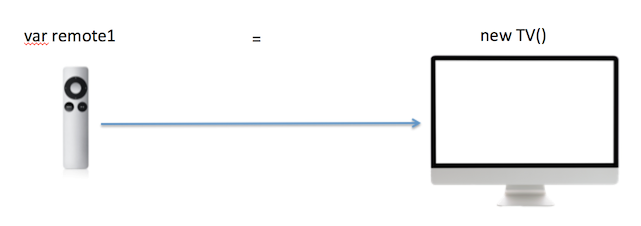
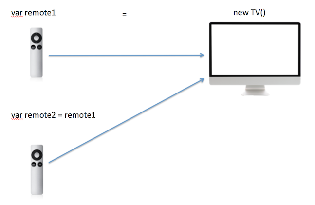
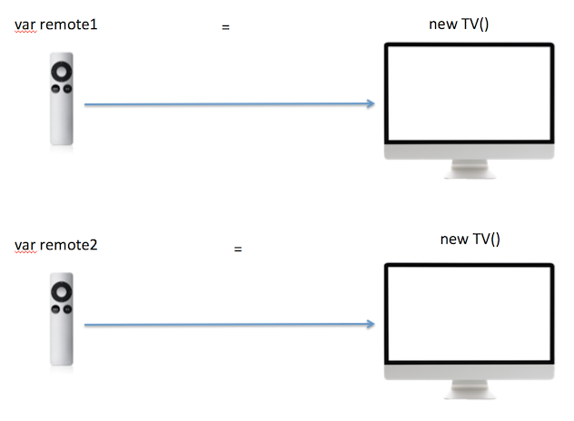

Introduction
Pass-by-Value vs Pass-by-reference: Javascript and Java
Later or sooner, you will be asked, "Hey, Is this language is pass-by-value or pass-by-reference".
Even after years, people reply something like, "It's pass by value......or wait a minute...it's pass by reference....Hey you know what, i read it some xyz blog, it's always be pass by value".
Sometime, even though say pass by value, they mean pass by reference and vice-versa
This article will help you to understand that.
How it work
So what is it?....pass by value or pass by reference?
In Javascript and Java, we have two types, primitive type and reference/Object type
primitive type is easy, it always be pass by value, simple and clear. Hence we are not going to discuss that
What about reference?
For all theoretical reason(interview and test), just say pass by value
However, for all practical reason, you have to go bit deeper, this article is all about that
Believe me, above statement is not important, what important is to understand How this all work!
Let's understand first, What actually happen when we create Object and reference.
Let's go with example where you have a TV in your home, its far and not many button on it. To access it, you need a remote.
A reference of Objcet is nothing but high-tech, re-configurable remote, which can point to your TV, but when re-configured, it can point to another TV, but at a time only one TV and TV is nothing but the Object, sitting deep down in Heap.
Step 1: You create a TV(by calling new Object()), you configured this TV with remote1(by assigning Object to reference)
At this stage, you can change the volume of TV by using remote (You can change the value of Object by reference)
Step 2: Now You want a separate remote, you create a copy of it, at this time both remote has power to change the volume of TV, mind it none of the remote is a TV, breaking a remote will not affect TV(as assigning reference to null, will not change the object or assigned it to null)
Step 3: because of some reason, you configured second remote to second TV (assigning remote2 reference to new TV Object)
At this stage relation of both remote are gone, Each can control there own TV but not of each others. if remote2 get destroyed(remote2 = null) and then TV2 get destroyed(2nd TV object get destroyed), remote1 and TV1 will stil work fine.
Code walk through
Everything we discussed above, can be connected in code
For simplicity, i have taken similar use case of TV, with a vol property.
Both in Javascript and Java code, we are passing reference to other function/method and try to change the vol property.
Javascript
/**
* A simple Object/function, we call it TV, with property vol
*/
function TV(vol) {
this.vol = vol;
}
var remote1 = new TV(10);
console.log("Initial test: ", remote1.vol); // Print 10
duplicate(remote1);
console.log("After Duplicate: ", remote1.vol); //Print 20
/**
* This is pass by value, but work like pass-by-reference i.e. whatever changes you will do here to remote2 will affet the main TV
* i.e. remote1 will also reflect same.
*/
function duplicate(remote2) {
remote2.vol = 20;
console.log("In Duplicate: ", remote2.vol); //Print 20
}
See what happen when we assign another object to reference, it's lost all connection with initial Object
Point to note, first reference(remote1) is still pointing to first Object and it's unchanged value
/**
* A simple Object/function, we call it TV, with property vol
*/
function TV(vol) {
this.vol = vol;
}
var remote1 = new TV(10);
console.log("Initial test: ", remote1.vol); // Print 10
duplicate(remote1);
console.log("After Duplicate: ", remote1.vol); //Print 10
function duplicate(remote2) {
remote2 = new TV(10); //You just have created a new TV, broke the link
remote2.vol = 20;
console.log("In Duplicate: ", remote2.vol); //Print 20
}
Java
Below code is in Java, but concept is as similar to Javascript as it could be
package com.passbyvalvsref;
class TV {
public String vol;
public TV(String vol) {
this.vol = vol;
}
}
public class TestPassByValVsRef {
private static void duplicate(TV remote2) {
remote2.vol = "20";
System.out.println("In Duplicate: " + remote2.vol); // Print 20
}
public static void main(String[] args) {
TV remote1 = new TV("10");
System.out.println("Initial test: " + remote1.vol); // Print 10
duplicate(remote1);
System.out.println("After Duplicate: "+ remote1.vol); //Print 20
}
}
package com.passbyvalvsref;
class TV {
public String vol;
public TV(String vol) {
this.vol = vol;
}
}
public class TestPassByValVsRef {
private static void duplicate(TV remote2) {
remote2 = new TV("10"); //You just have created a new TV, broke the
// link
remote2.vol = "20";
System.out.println("In Duplicate: " + remote2.vol); // Print 10
}
public static void main(String[] args) {
TV remote1 = new TV("10");
System.out.println("Initial test: " + remote1.vol); // Print 10
duplicate(remote1);
System.out.println("After Duplicate: "+ remote1.vol); //Print 20
}
}
Conclusion
For all technical reason(Interview and test), Javascript and java are pass by value language
When we pass reference, for all practical reason, things behave like pass by reference because we pass the value of memory location ob Object in heap.
Actually, calling reference pass "pass by value", sound wrong and give wrong signal, because traditionally pass by value does give you power to update Object which intern reflect in all reference.
Calling reference pass "pass by reference", sounds more correct as it let you update the Object which intern reflect in all reference.
With all these confusion best is, just know whats going on...and let technical jargon for Interview and test.
History of this debate, Let us 'C'
Any one from C background, will ask you this one day
Why??...because C started pass-by-value and pass-by-reference concept and It does it well
It is clear in code when you are doing what and why you doing so.
I tried to have similar code what we have seen so far in C (struct is closet o Object in C) and things are so clear here, we just spread confusion in all other modern languages.
#include <stdio.h>
#include <stdlib.h>
struct TV {
int vol;
};
void duplicate(struct TV remote2) { //Pass by value, crystall clear
remote2.vol = 20;
printf("In Duplicate: %d\n", remote2.vol); //Print 20
}
int main()
{
struct TV remote1;
remote1.vol = 10;
printf("Initial test: %d\n", remote1.vol); //Print 10
duplicate(remote1);
printf("After Duplicate: %d\n", remote1.vol); //Print 10
}
#include <stdio.h>
#include <stdlib.h>
struct TV {
int vol;
};
void duplicate(struct TV *remote2) { //Pass by ref, crystall clear
remote2->vol = 20;
printf("In Duplicate: %d\n", remote2->vol); //Print 20
}
int main()
{
struct TV remote1;
remote1.vol = 10;
printf("Initial test: %d\n", remote1.vol); //Print 10
duplicate(&remote1); // passing address
printf("After Duplicate: %d\n", remote1.vol); //Print 20
}